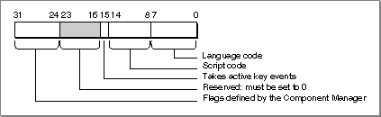

Legacy Document
Important: The information in this document is obsolete and should not be used for new development.
Important: The information in this document is obsolete and should not be used for new development.


About Text Service Components
Text service components are components as defined and used by the Component Manager. They have a specific structure, interface, and manner of execution. For more information on components, see the chapter "Component Manager" in Inside Macintosh: More Macintosh Toolbox. This section briefly describes the component description record, a data structure associated with a text service component.The component description record, maintained by the Component Manager for each registered component, identifies the characteristics of the component, including the nature of services provided by the component and the manufacturer of the component. It is filled out by the text service component at initialization.
The
ComponentDescriptiondata type defines the format of the component description record:
TYPE ComponentDescription = RECORD componentType: OSType; {command set ID} componentSubType: OSType; {specifies flavor} componentManufacturer: OSType; {vendor ID} componentFlags: OSType; {control flags} componentFlagsMask: OSType; {mask for control flags} END;Figure 7-8 The format of the
Field Description
componentType- For text service components, this field contains the interface type. The interface type specifies the set of Apple events and component commands associated with the text service component. Currently, all text service components have the same interface type,
kTextService, whose associated 4-character tag is'tsvc'. To obtain a list of all available text service components, a client application can specify the valuekTextServicesin thecomponentTypefield when calling the Component Manager routineGetServiceList.componentSubType- For text service components, this field contains the text service component type. The text service component type specifies the function and optionally a set of additional routines and data structures associated with that particular kind of text service component. Currently, only one text service component type is defined,
'inpm', specifying an inline input method.componentManufacturer- The identification number of the manufacturer of this particular text service component.
componentFlags- Four bytes that contain component-specific information. See
Figure 7-8:- Bits 0-7 contain the language code (as unsigned 8 bits).
- Bits 8-14 contain the script code (as unsigned 7 bits).
- Bit 15 indicates whether the text service component takes active events. When bit 15 = 1, the text service component is interactive and accepts user events. When bit 15 = 0, the text service component is not interactive--that is, it only supplies batch services.
- Apple has reserved bits 16-23, so text services must set them to 0.
- The Component Manager defines bits 24-31.
componentFlagsfield of the component description record
For example, an input method for the Japanese script system might assign the following values to the
componentFlagsMask- Four bytes that contain values used to affect the
componentFlagsfield. This field should be 0 in the component description record for any text service component.componentType,componentSubType, andcomponentFlagsfields of component description record.
cd: ComponentDescription; cd.componentType := kTextService; {'tsvc'} cd.componentSubType := kInputMethodService; {'inpm'} cd.componentFlags := $0000810B; {Japanese script & language } { --takes user events}